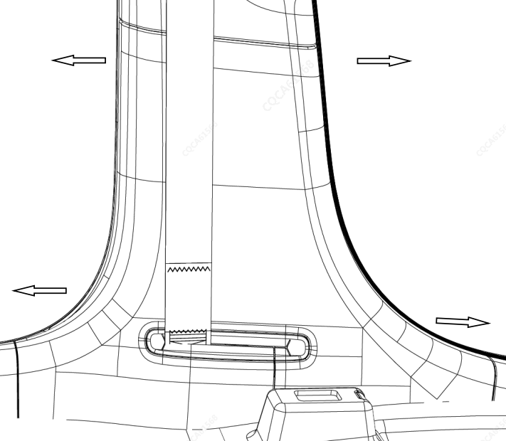
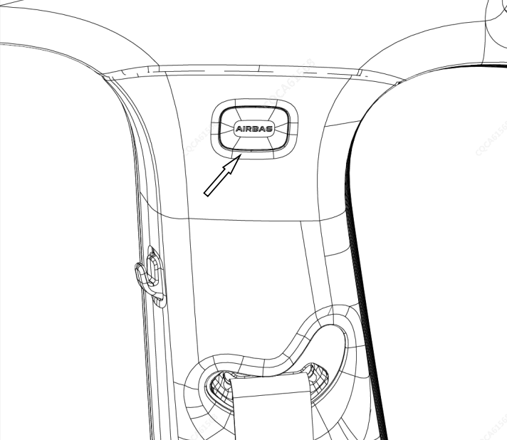
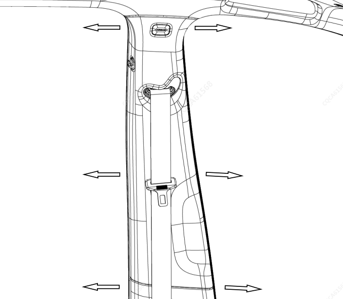

拆卸
拆卸前门槛装饰板（左）。参见 拆卸与安装前门槛装饰板总成
拆卸后门槛装饰板（左）。参见 拆卸与安装后门槛装饰板总成
拆卸前、后门框密封条（左）。参见 拆卸和安装前门框密封条 、参见 拆卸和安装后门框密封条
用手向车内方向拆拉B立柱下内饰板（左），卡扣从钣金脱出后，拆下安全带出口卡子取出安全带，取下B立柱下内饰板（左）。

用一字螺丝刀撬开B立柱安全气帘螺钉孔盖（左），再用十字螺丝刀拆卸此位置的螺钉。

用手向车内方向拆拉 B立柱上内饰板（左），卡扣从钣金脱落即可。

安装顺序与拆卸顺序相反。